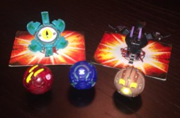

Para efeitos da nota atribuída à resolução de exercícios ao longo do semestre - Submeter até 23:59 de 22 de Novembro
(o problema continuará depois disponível para submissão, mas sem contar para a nota)
[para perceber o contexto do problema deve ler o guião da aula #06]
Os Bakugans são pequenas esferas que quando são colocados em cima de cartas especiais, abrem-se, transformando-se em diferentes criaturas, tais como um dragão ou um escorpião. Cada Bakugan tem associada a si uma determinada quantidade de energia G que depois é usada quando combatem para descobrir qual é o mais forte. Por exemplo, podemos ter um Bakugan com 300G, outro de 400G e outro de 500G, sendo que o mais forte dos três seria neste caso o de 500G.
O Elias adora jogar com Bakugans e tem uma enorme colecção. Depois de ter precisado da tua ajuda para tirar fotos à coleção, ele precisa novamente da tua ajuda. Todos os dias ele leva alguns Bagukans para a escola, mostrando-os aos amigos e participando em animados combates. O Elias não leva contudo toda a colecção para a escola, preferindo antes escolher apenas alguns, nomeadamente os que têm maior energia, para que possa ser o mais poderoso em combate, e os que têm menor energia, para que os possa oferecer a outros amigos sem colocar em causa a sua capacidade de vencer futuros combates.
A colecção do Elias é tão grande que ele precisa de da tua ajuda para a manter. Em particular, ele tem de ser capaz de fazer as seguintes operações sobre a colecção:
Por exemplo, imaginemos que inicialmente o Elias não tem nenhum Bakugan. Se começar por adicionar três Bakugans à colecção, um de 200G, outro de 600G e outro de 450G, passaria a deter uma colecção de Bakugans com as seguintes energias: {200, 600, 450}. Se o Elias quiser remover o Bakugan de menor energia, retira o de 200G e fica com a colecção {600, 450}. Se seguidamente quiser remover o de maior energia, retira o de 600G, e fica com a colecção {450}. Se adicionar agora um Bakugan de 700G, fica com uma colecção {450, 700}. Finalmente, se decidir agora remover o de menor energia, retira o de 450G e fica com uma colecção {700}.
Podes ajudar o Elias a gerir os seus Bakugans?
Dado um conjunto de operações de adição e remoção de Bakugans, a tua tarefa é dizer quais os Bakugans que são retirados em cada operação de remoção. As operações de remoção possíveis correspondem a remover o Bakugan com maior ou menor energia de toda a colecção.
Na primeira linha do input estão dois números inteiros A e R, separados por um espaço, indicando respectivamente a quantidade de adições de Bakugans (A) e a quantidade de remoções de mínimos ou máximos (R). Seguem-se exactamente A+R linhas, cada uma contendo um dos seguintes 3 formatos (sem as aspas):
Podem existir vários Bakugans com a mesma energia ao mesmo tempo na colecção, sendo que nesse caso é indiferente qual o Bakugan que é retirado. É garantido que existe sempre pelo menos um Bakugan na colecção quando uma operação de remoção é efectuada. Todas as operações são feitas pela ordem em que aparecem no input.
O output deve ter exactamente R linhas. Em cada uma delas deve ser imprimido um único número inteiro indicando a energia do Bakugan retirado na operação de remoção respectiva, pela mesma ordem em que estas operações aparecem no input.
São garantidos os seguintes limites em todos os casos de teste que irão ser colocados ao programa:
| 1 ≤ A ≤ 100 000 | Número de operações de adição | |
| 1 ≤ R ≤ 10 000 | Número de operações de remoção | |
| 1 ≤ E ≤ 1 000 000 | Energia de cada Bakugan |
4 3 BAK 200 BAK 600 BAK 450 MIN MAX BAK 700 MIN
200 600 450
O exemplo de input corresponde ao caso de exemplo explicado no enunciado.
Desenho e Análise de Algoritmos (CC2001)
DCC/FCUP - Faculdade de Ciências da Universidade do Porto